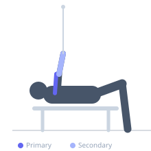
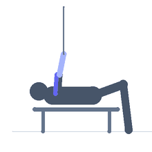

Exercise guide / Lying Cable Preacher Curl
Lying Cable Preacher Curl
A bicep isolation exercise performed lying face-down on an incline bench with a cable attached below, curling the bar upward. The prone position eliminates the ability to use body swing and keeps the shoulder in a consistent position, targeting the biceps through a unique angle that changes the peak contraction point.
Primary muscles
biceps brachii long head
biceps brachii short head
brachialis
Secondary muscles
brachioradialis
Stabilizers
flexor carpi radialis
Equipment
Cable Machine (Low Pulley)
Adjustable Bench (Incline / Decline)


Starting position
- Set an incline bench in front of a low cable pulley. Lie face-down on the bench with arms hanging down toward the cable attachment. Grip a curl bar or rope.
Setup
- Attach a straight bar or EZ bar to the low pulley. Set an incline bench at 30 to 45 degrees. Lie prone on the bench with arms hanging toward the pulley.
Steps
- Step 1: Keeping the upper arms stationary hanging straight down, curl the bar upward.
- Step 2: Curl to full bicep flexion at the top.
- Step 3: Slowly lower back to full arm extension.
- Step 4: Repeat without letting the upper arm move.
Coaching cues
- Upper arms stay still
- Squeeze the bicep at the top
Breathing
- Exhale on the curl up. Inhale on the controlled descent.
Range of motion
- Full extension at the bottom. Full flexion at the top.
Tempo
- 2-1-3-0
Common mistakes
- Allowing the upper arms to swing forward during the curl
- Using too heavy a load for this strict position
Safety
- The prone position is strict — start lighter than expected
Training
- hypertrophy: 8–15 reps
- hypertrophy: 3–4 sets
- Rest: {'hypertrophy': 90}